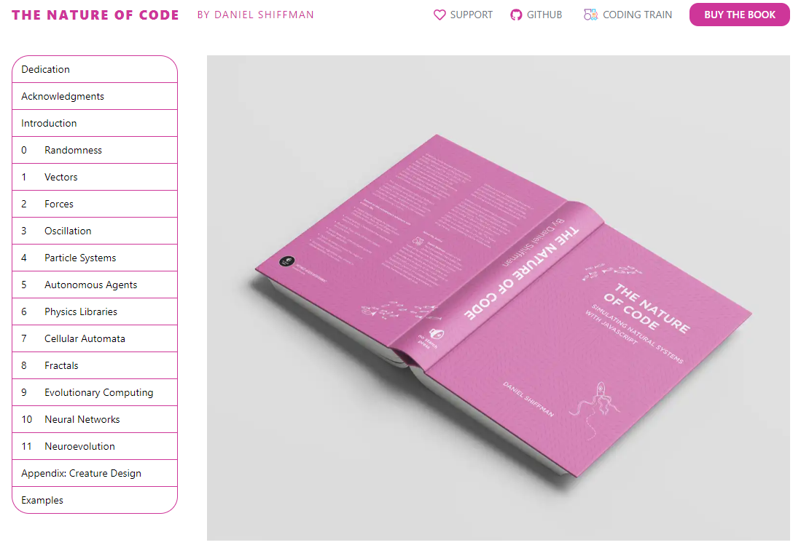
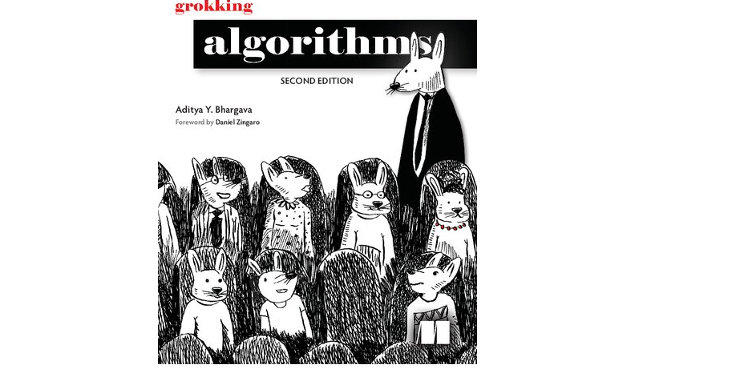

Rogue Docs#
The website is organized as a digital book contains an exploration of Algorithms, Data Science, Math, Artificial Intellegence, Classical Computer Science, and Financial modeling using Python. Here is the current coverage status.
What makes this Ebook Different from others?#
This Book |
Others |
|---|---|
Focuses on Assigments & Problem Solving |
Focuses on Theory |
Concise and understandable concepts |
Long and very technical text |
Requires Internet and laptop setup |
Usually self-contained in the book. |
Prioritizes User Friendliness |
Prioritizes Completeness |
Free & Constant Updates on Material |
Paid & Updates by version |
We don’t shy away from linking to external resources |
Good luck searching on the glossary |
Up to you to Create your own study cards |
|
Meme alive each chapter |
No memes |
How to use the Book#
Page by Page Learning#
TODO - Add a video tutorial on how to use the book page by page.
Watch the Introduction Video/Short Tutorial
Some chapters have Anki Cards to help you remember the concepts.
Watch the Introduction Video/Short Tutorial
Try to solve the Anki Cards
Each Page chapter has an assigment with resources to help you finish the assigments.
Try completing the assigment on your own.
Use the references to help you finish your assigment.
Use the book to check your answers and solutions.
Practice Mode.#
TODO - Add a video tutorial on how to use the practice mode.
Clone the repository and go to the
notebooksfolder.We have Practice Notebooks for each chapter.
If you want to practice feel free to create a new branch e.g.
practicefrom theunstarted-assgimentsbranch.Select a Random Assigmnet to work on.
once Completed your study session, you can reset or remove the
practicebranch.
Misc#
Current Coverage#
Topic |
State |
|---|---|
Genetic Algorithms |
IN PROGRESS |
Graph Problems |
|
Artificial Intelligence |
|
Probability |
Anki Cards Coverage#
Topic |
State |
|---|---|
Genetic Algorithms |
IN PROGRESS |
Page Stage Tag#
Inspiration#
Book |
Screenshot |
|---|---|
 |
|
Grokking Series |
 |